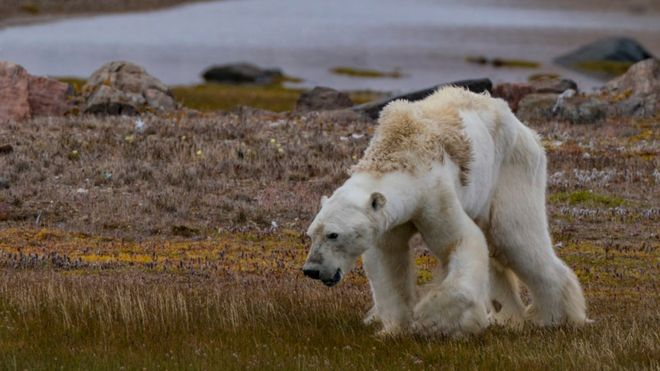
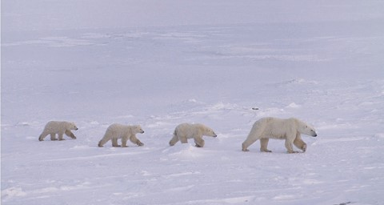
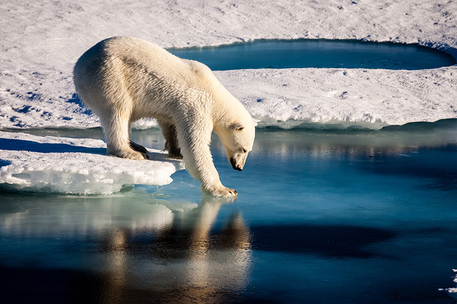
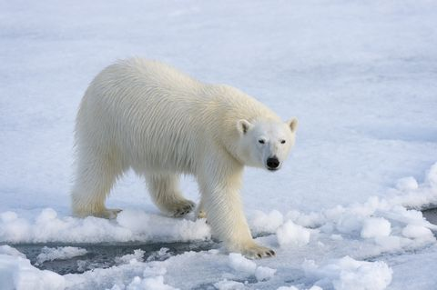
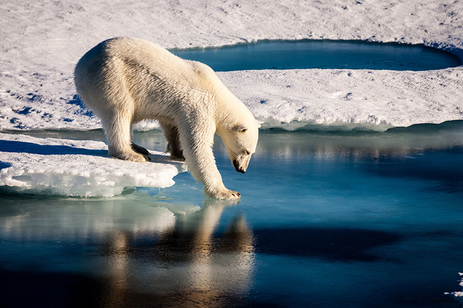
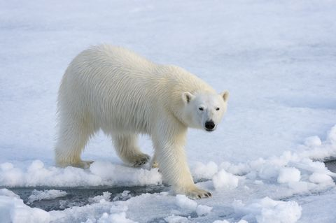
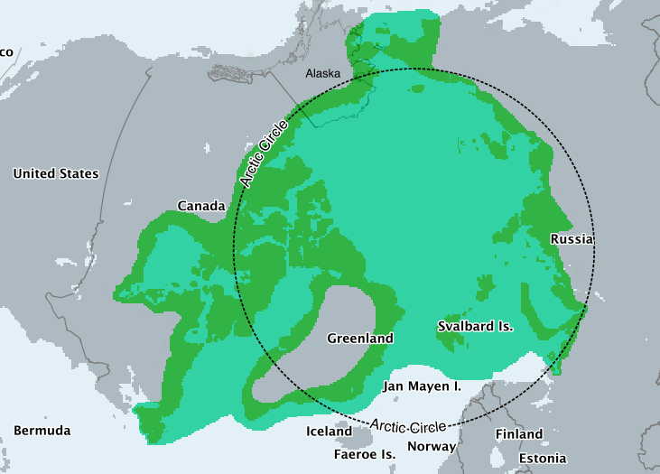

Facts
Polar Bears are marine animals that live most of their lives on the sea ice of the Artic Ocean. Their thick layer of body fat and water-repellant coat insulates them from the cold air and water. They spend over 50 pecent of their time hunting for food. Polar Bears eat mainly ringed and bearded seals because in order to survive they need large amounts of fat. They weigh between 800-1300 pounds and are around 6-9ft in length.
What is happening to the Polar Bears?
The ongoing and potential loss of their sea ice habitat resulting from climate change, has caused polar bears to be listed as a threatened species in the US under the Endangered Species Act in May 2008. Their status is currently vulnerable. Their survial and protection is an urgent issue for the WWF. Scientists have estimated that there are currently 23,000 in the world. Unless action is taken on climate change, the polar bear population will decrease drastically by mid-century.
 




How can we help?
There are a bunch of different ways we can help the polar bears. One way we can help is something as simple as reduce, reuse, recycle. Another way might be a little difficult for some but reducing your meat intake can make a huge change!! A third way to help is by replacing light bulbs with energy efficient LED bulbs. Lastly, a fourth way you can help is to use more public transporation! There are many more ways you can help, do your research and you'll definitely be able to find ways that are more maintable! Polar bears are beautiful creatures that do not deserve this! Even the smallest changes can really make a difference!